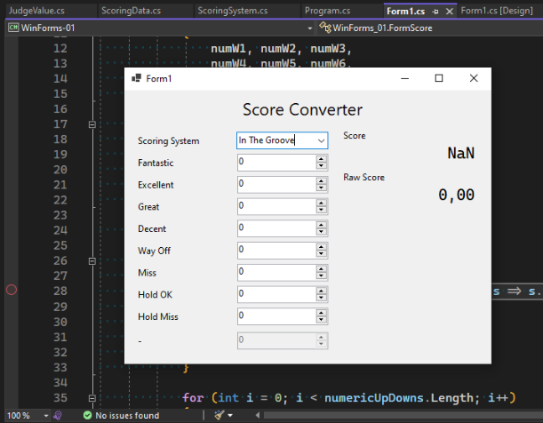
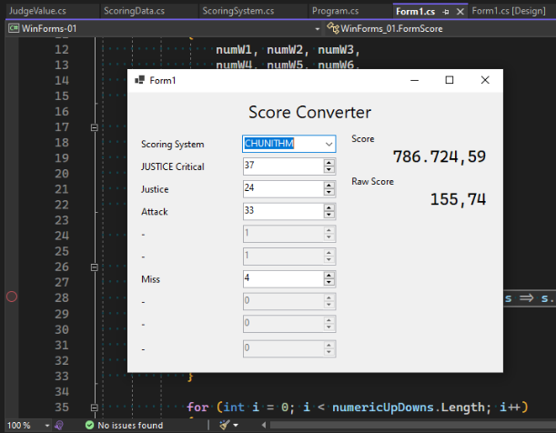

Pertemuan 01: WinForms Application
Tugas minggu ini adalah membuat aplikasi Windows Forms. Aplikasi harus bisa menerima input pengguna dan melakukan update pada form.
Untuk proyek WinForms kali ini, saya mengimplementasikan rhythm game score converter, dimana perhitungan skor akan berubah tergantung dari jenis rhythm game yang dipilih.
Kesulitan yang saya alami bukanlah dalam membuat form, namun dalam menggunakan data yang saya berikan. Saya dulu punya pengalaman dengan bahasa C# sekitar 6 tahun yang lalu. Ketika itu saya membuat proyek gim berbasis music menggunakan Unity. Saya kembali mempelajarinya ketika pada mata kuliah Pemrograman Web diminta untuk membuat aplikasi ASP.NET Core. Mohon maaf, saya tidak mempublikasikan kode sumber untuk tugas tersebut.
Kode untuk tugas minggu ini saya taruh di repositori GitHub milik saya.
Membuat Project
Membuat project di Visual Studio 2022 sangat sederhana dan mudah.


Setelah itu, saya membuat repo Git dan saya push ke GitHub. Membuat layout pun cukup mudah. IDE yang saya pakai berjalan lambat karena CPU pada laptop saya kelas menengah ke bawah, dan menggunakan 8GB RAM pada virtual machine Windows 10 tidak membantu banyak. Setidaknya saya masih bisa menulis kode program yang bisa berjalan. Hampir.
Tetapi sebelumnya, kita bahas dulu struktur data yang saya gunakan.
Data Skor
Data Skor dibuat mengikuti struktur berikut:
Name: name of score system
Judgements: # list of Judge values
- Name: name of judge 1
Value: 2 # weight value of judge
Used: true # whether the judge is used or not
- Name: name of judge 2
Value: 1 # weight value of judge
Used: true # whether the judge is used or not
Struktur ini diimplementasikan dalam C# dengan nama ScoringSystem dan JudgeValue untuk daftar nilai judge. Detail lebih lanjut dapat dilihat di file masing-masing.
Dalam ScoringSystem, saya juga menambahkan fungsi CalculateScore yang menerima daftar jumlah tiap judge dan mengembalikan nilai berupa tuple dua bilangan bertipe double: skor mentah/asal, dan skor yang dinormalisasi dengan rentang antara 0 dan 1 inklusif.
public (double, double) CalculateScore(int[] judgeCounts) {
double score = 0;
double maxWeight = double.MinValue;
double totalNotes = 0;
for (int i = 0; i < Judgements.Count; i++)
{
var judge = Judgements[i];
if (i >= judgeCounts.Length) break;
if (!judge.Used) continue;
maxWeight = Math.Max(maxWeight, judge.Value);
score += judge.Value * judgeCounts[i];
totalNotes += judgeCounts[i];
}
double normalizedScore = score / maxWeight / totalNotes;
return (score, normalizedScore);
}
Potongan kode ini melakukan iterasi untuk tiap Judgement dan jumlah masing-masing. Jika salah satu dari list tersebut habis, hentikan perhitungan. Jika ternyata Judgement tidak terpakai, maka tidak akan masuk perhitungan skor.
Skor dihitung dari hasil jumlah dasi tiap hasil perkalian antara bobot nilai judge dan jumlahnya. Sementara itu, total jumlah and nilai bobot maksimum dicatat dalam variabel terpisah. Nilai score adalah skor mentah/asal, sedangakan nilai normalizedScore dihitung dari skor asal dibagi bobot maksimum dan total jumlah yang dicatat sebelumnya.
Data ditampung langsung dalam kelas ScoringData, dengan melakukan inisialisasi daftar sistem skor dan nilai Judgement. Data nilai diambil dari berbagai sumber:
- Dance Dance Revolution Dance Level Calculator
- Waterfall Theme for StepMania/ITG
- CHUNITHM
Untuk DDRMAX, saya menggunakan varian MIGS agar bisa mewaiki Judgement Marvelous dengan lebih tepat.
Kemudian, saya mengalami kendala saat ingin menggunakan data tersebut yang mengakibatkan program tidak bisa berjalan.
Terjadi NullReferenceException
Ketika mencoba memuat data dari objek ScoringData, terjadi NullReferenceException. Dengan kata lain, program ingin mencoba mengakses properti Systems, namun terbaca sebagai null, sehingga program terhenti. Awalnya saya mengira ada kesalahan dalam mengisi data ComboBox, namu tidak ada masalah di sana.

Masalah sebenarnya terjadi ketika melakukan inisialisasi list Judgements. Memberi nilai pada variabel belum tentu akan membuat objek yang bersangkutan, akhirnya saya tambahkan inisialisasi objek list.

Setelah melakukan perubahan pada sumber data (yang mana hanya data tulis langsung dalam kode), program form akhirnya dapat berjalan.
Form
Form ini terdiri dari beberapa elemen:
- 1
ComboBoxuntuk memilih sistem skor, - 9
NumericUpDownuntuk melakukan input jumlah, dan - 2
Labeluntuk menampilkan skor.
Tergantung jenis sistem yang dipilih, beberapa Judgement tidak terpakai, ditandai dengan properti Used dalam tiap entri Judgement. Oleh karena itu, NumericUpDown yang tidak dipakai akan dimatikan (.Enabled = false). Saya juga tambahkan cek untuk input yang tidak memiliki Judgement terkait, namun tidak didemonstrasikan di sini karena semua entri telah tercakup semua.
Secara bawaan, NumericUpDown memiliki nilai maksimum 100. Saya ingin lebih dari itu. Jadi saya buka Form1.Designer.cs, yang dibuat oleh UI designer, menambahkan nilai maksimum decimal.MaxValue secara manual pada tiap kotak angka. Dengan begini, angka sangat besar pun bisa didukung tergantung kemampuan sistem.
Saya lakukan update pada form ketika nilai ComboBox atau dalah satu dari NumericUpDown berubah. Dalam proses update, data dari form akan diambil dan skor akan dihitung, baik nilai skor mentah maupun nilai skor yang dinormalisasi menjadi rentang 0 hingga 1.000.000.

Nilai input diambil dari video berikut:
Dan berikut hasilnya. Perhatikan, kedua nilai Fantastic dari video dijumlahkan menjadi satu.



 Skor DDRMAX terlihat aneh, karena dalam game tersebut Hold OK bernilai tiga kali lipat dari Perfect (tidak sengaja tertulis Excellent dalam form), dan nilai tersebut yang dianggap sebagai nilai bobot maksimum.
Skor DDRMAX terlihat aneh, karena dalam game tersebut Hold OK bernilai tiga kali lipat dari Perfect (tidak sengaja tertulis Excellent dalam form), dan nilai tersebut yang dianggap sebagai nilai bobot maksimum.
Penutup
Ini hanya sekedar bukti bahwa saya bisa membuat aplikasi WinForms yang dapat berjalan. Alur proses masih dapat diperbaiki, seperti pada kasus DDRMAX.
Tetapi sekian dulu untuk minggu ini, kita lihat kelanjutannya di materi minggu depan.
a70921d @ 2023-09-11